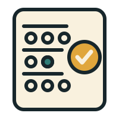

Test › No oficiales
Test no oficiales
Preguntas escritas para este sitio, no copiadas de ningún banco de academia. Cada tema del programa tiene las suyas, con la explicación de por qué la respuesta correcta lo es y por qué fallan las otras. Se practican en orden aleatorio y sin repetir dentro de la sesión.

Sitio no oficial. Este proyecto no pertenece ni está respaldado por el Ministerio del Interior ni por la Dirección General de la Policía. La puntuación que muestra esta página es un recuento de práctica, no una calificación: la fórmula oficial de penalización debe confirmarse en las bases publicadas en el BOE y aquí se aplica con penalización 0.
Cargando el banco de preguntas propias…
Elige cuánto quieres hacer
Diez preguntas bien hechas cunden más que cien a disgusto. Elige el tema que estés estudiando o practica con todo lo que hay. No hay rachas que mantener ni sesiones que completar: se elige, se hace y se cierra.
El máximo lo marca el banco disponible.
Reto del día
Diez preguntas elegidas por la fecha: son las mismas durante todo el día y cambian mañana. Sin reloj.
Tu progreso
Se guarda sólo en este navegador, sin cuentas ni servidores. Puedes exportarlo a un fichero y volver a importarlo, o borrarlo cuando quieras.
Se borrarán los récords, el récord de racha, el último intento y el reto de hoy guardados en este navegador. No se puede deshacer.
Tus puntos débiles
Sale de las preguntas de este banco que has contestado, aquí en tu navegador. Los exámenes oficiales no entran: no están clasificados por tema. Cada aviso lleva el recuento junto al porcentaje, porque con pocos datos un porcentaje solo miente.
Procedencia de las preguntas
Teclado: 1, 2 y 3 responden; Intro avanza. Salir de la sesión no guarda nada y no se pierde ninguna marca.